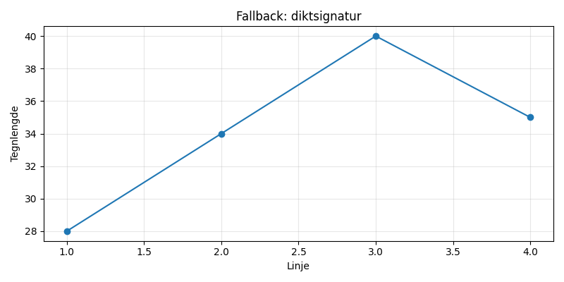

En ensom brødrister i lilla, danser på taket når månen skinner, sprer knasende drømmer i nattens stille, mens stjerner fniser av dens varme.

import matplotlib.pyplot as plt
import numpy as np
# Dikt
dikt = """En ensom brødrister i lilla,
danser på taket når månen skinner,
sprer knasende drømmer i nattens stille,
mens stjerner fniser av dens varme."""
# Lag en figur og akser
fig = plt.figure(figsize=(12, 8))
ax = fig.add_subplot(111)
# Data for brødristerens dans
x = np.linspace(0, 2 * np.pi, 100)
y = np.sin(x) * 2 # Simulerer dans på taket
ax.plot(x, y, color='purple', label='Brødrister')
# Månen
moon_radius = 0.7
moon_x = np.linspace(0.2, 1.8, 100)
moon_y = np.sqrt(moon_radius**2 - (moon_x - 1)**2)
ax.fill(moon_x, moon_y, color='white', alpha=0.8, label='Måne')
# Stjerner
num_stars = 50
star_sizes = np.random.uniform(0.1, 0.3)
star_angles = np.random.uniform(0, 2 * np.pi, num_stars)
star_x = 1 + np.cos(star_angles) * 0.8
star_y = 1 + np.sin(star_angles) * 0.8
for i in range(num_stars):
ax.plot(star_x[i], star_y[i], marker='*', color='yellow', markersize=star_sizes[i], label='Stjerner' if i == 0 else "")
# Tekst
ax.text(0.5, 0.9, dikt, ha='center', va='center', fontsize=12, color='black')
# Justering og titler
ax.set_aspect('equal')
ax.axis('off')
ax.set_title('En Ensom Brødrister', fontsize=16)
# Legende
ax.legend(loc='upper right', fontsize=10)
# Lagre figuren
plt.savefig(output_path)execution_ok=False fallback_used=True image_ok=True